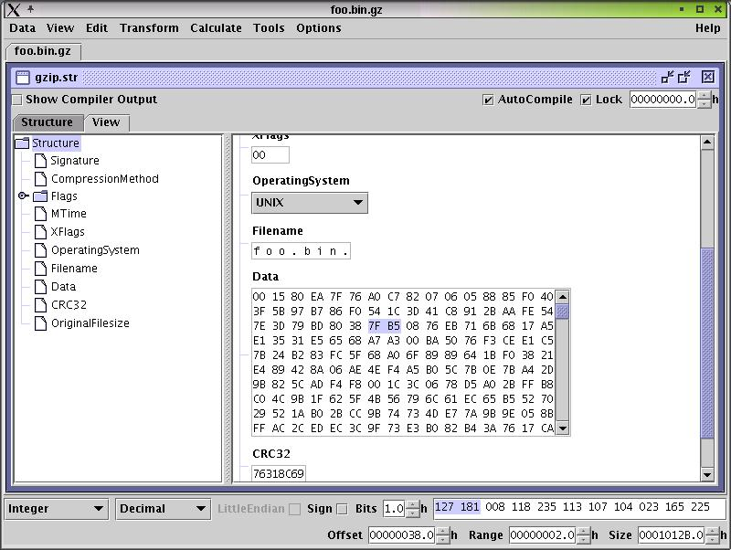

A view is a tree structure consisting of view elements. There are two types of elements:
data frames and data fields.
Data frames may contain other data frames or data fields. Data fields are leaves in the tree
structure and cannot contains other view elements.
The view is divided into a index view on the left side and the data view on the right side.
Index View
The Index views displays the complete view structure but without the data. Only the View elements are displayed.
The selected view element is the root element of the view displayed on the right side.
Data View
The Data View displays one or multiple view elements in a tree structure.
The data view can be configured under View->Configure View.
You can enable/disable offset and size information and configure the layout of the data fields, e.g. how many
bits of data are displayed per line and per page.
If there is only a single data field in the data view the layout information is ignored and
the data view is sized according to the available space.
The data fields can be used to edit the data. You can start and stop the editing by pressing return while a data field
is selected.
There are two type of data fields: data encoding fields and map fields.
Data encoding fields are text areas were you can modify the data like in a texteditor. The data encoding
used in the field defines how data is displayed and how the characters entered via the keyboard
are converted into data. If you do not know which data encoding is used in specific data encoding field
move the mouse pointer onto the field and wait till the tooltip pops up. It will give you informtation concerning
the data encoding.
If you are in editing mode the currently selected unit is highlighted blue in the data encoding field. If the unit is highlighted
red the changes you see on the screen have not been validated.
| Keys | Action |
|---|---|
| Cursor Right | Next Input Point |
| Cursor Left | Previous Input Point |
| Cursor Down | Next Line |
| Cursor Up | Previous Line |
| Home | Start of Line |
| End | End of Line |
| Ctrl + Home | Start of Field |
| Ctrl + End | End of Field |
| Delete | Delete Char |
| Backspace | Deleted previous Char |
| Page Up | Scroll one Page Up |
| Page Down | Scroll one Page Down |
| Keys | Action |
|---|---|
| Shift + Cursor Right | Extend Selection one Unit to the Right |
| Shift + Cursor Left | Extend Selection one Unit to the Left |
| Shift + Cursor Down | Extend Selection one Line down |
| Shift + Cursor Up | Extend Selection one Line up |
| Shift + Page Up | Extend Selection from current Unit one Page Up |
| Shift + Page Down | Extend Selection from current Unit one Page Down |
| Shift + Home | Select from current Unit to First Unit in Line |
| Shift + End | Select from current Unit to Last Unit in Line |
| Shift + Ctrl + Home | Select from current Unit to Start of Field |
| Shfit + Ctrl + End | Select from current Unit to End of Field |
| Ctrl + L | Select current Line |
| Ctrl + A | Select current Field |
| Return | Start or stop editing |
| Mouse | Action |
|---|---|
| Singleclick LeftMouseButton | Select Unit |
| Doubleclick LeftMouseButton | Select current Line |
| Tripleclick LeftMouseButton | Select current Field |